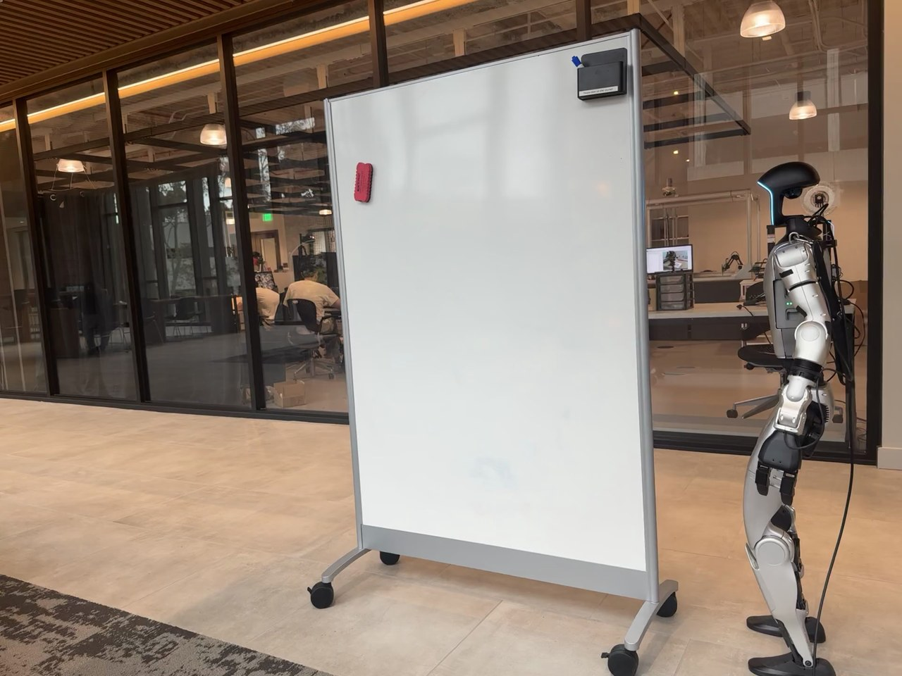

Humanoid Everyday · loco-manip-6__hold_whiteboard_and_walk
Hold whiteboard and walk

Visual review action_review.json
{
"prompt_protocol": "humanoid_action_v1",
"prompt_provenance": "visually_authored_from_video_and_initial_frame",
"reviewed_contact_sheets": [
"sheet_001.jpg",
"sheet_002.jpg",
"sheet_003.jpg",
"sheet_004.jpg",
"sheet_005.jpg",
"sheet_006.jpg"
],
"inspected_frame_stride": 2,
"inspected_sampled_frame_count": 328,
"initial_scene": "Robot stands beside an upright whiteboard supported by a floor-standing caster base. The nearest vertical frame is within left-arm reach. Both hands initially hang down; the head and torso face toward the board and forward travel direction.",
"observed_sequence": [
{
"start_frame": 0,
"end_frame": 106,
"action": "Robot and whiteboard remain essentially stationary; arms hang beside the torso.",
"confidence": "high"
},
{
"start_frame": 107,
"end_frame": 197,
"action": "The anatomical left arm raises and extends toward the near vertical whiteboard frame; the open hand reaches the frame at approximately waist height. The right hand remains beside the hip.",
"confidence": "high"
},
{
"start_frame": 198,
"end_frame": 279,
"action": "Left hand closes around the near vertical frame and establishes a hold. Whiteboard remains supported upright on its caster base; robot waits with left elbow bent.",
"confidence": "high"
},
{
"start_frame": 280,
"end_frame": 488,
"action": "Robot begins alternating forward steps while maintaining the left-hand hold, pushing the whiteboard ahead across the floor on its caster wheels. Robot and board move toward image left and slightly away; the board turns modestly as it rolls. The right hand remains free and down by the body without board contact.",
"confidence": "high"
},
{
"start_frame": 489,
"end_frame": 546,
"action": "Travel ceases and feet settle into a standing stance. The whiteboard stays upright in its displaced position while the left hand continues holding the frame.",
"confidence": "high"
},
{
"start_frame": 547,
"end_frame": 600,
"action": "The left hand opens, releases the frame and withdraws downward to the side. The board remains upright and stationary on its wheels.",
"confidence": "high"
},
{
"start_frame": 601,
"end_frame": 654,
"action": "Robot stands beside the relocated board with hands lowered and no visible contact. Whiteboard remains standing in the new position.",
"confidence": "high"
}
],
"arm_hand_roles": {
"left": "Active hand: reaches for and grips the near vertical whiteboard frame, maintains contact to push and guide the wheeled board during forward walking, then opens and lowers after stopping.",
"right": "Inactive for manipulation: stays by the hip/body, intermittently occluded, with no observed whiteboard contact or support.",
"coordination": "Single-hand manipulation coordinated with alternating forward steps and a stable torso; caster base supports the board. No hand-to-hand transfer or human interaction."
},
"anatomical_side_evidence": {
"description": "Initial head front faces toward image left, while exposed back equipment lies on the image-right side of the torso. Camera sees the robot left side: the near shoulder, elbow and hand form the active arm. Later rear three-quarter views at frames 430 and 510 show this same arm on the anatomical left side of the back, while the opposite arm remains near the far hip. Side naming is based on body attachment and front/back orientation, not the hand image position.",
"confidence": "high",
"uncertainty": null
},
"locomotion": "Forward alternating steps move the robot alongside the board; left-hand contact pushes and guides the board on its caster base. No lifting off the floor is observed.",
"evidence_frame_indices": [
0,
126,
180,
198,
218,
280,
300,
360,
430,
486,
510,
556,
568,
582,
600,
654
],
"initial_png_inspected": true,
"initial_png_inspection": "Native source first_frame.png viewed after full-sequence inspection.",
"coverage": "All six temporary sheets visually inspected, covering 328 every-second-frame samples across source frames 0-654. Sixteen native detail frames visually inspected, including contact, walking, stopping, release, and terminal frame.",
"uncertainties": [
"Exact first contact and release instants are bounded by two-frame sampling; chronology intervals describe visually observed phases rather than subframe contact timing."
],
"annotation_discrepancies": [
"Original instruction describes carrying a large flat object. In the visible sequence the whiteboard is held at its vertical frame and pushed/rolled on its caster base; it is not lifted or carried off the floor."
],
"selected_execution_status": "success",
"selected_execution_status_basis": "Visible relocation by wheeled transport completes, followed by a clear hand release; board remains upright and robot stands beside it.",
"outcome": "Whiteboard successfully moved on its wheels and left standing; left hand released.",
"terminal_state": "The whiteboard stands upright on its caster base in a new position toward image left. Robot stands beside it with both arms lowered; left hand is clear of the frame and no further movement is visible.",
"video_id": "loco-manip-6",
"dataset": "Humanoid_Everyday",
"dedicated_review_agent": "review_he_loco_manip_6",
"review_source_video": "Humanoid_Everyday/loco-manip-6__hold_whiteboard_and_walk/third_person/original/original.mp4",
"source_frame_count": 655,
"source_fps": 30.0,
"native_detail_frames": [
0,
126,
180,
198,
218,
280,
300,
360,
430,
486,
510,
556,
568,
582,
600,
654
],
"world_model_prompt": "The humanoid robot grasps the whiteboard's nearby vertical frame with its left hand at about waist height. Keeping that hold, it walks forward alongside the board and pushes it ahead on its caster wheels, then stops with the board upright. It releases the frame and lowers its left arm, leaving the whiteboard standing at its new position. Keep the camera fixed; preserve robot geometry, physically valid joint motion, and normal gripper opening and closing.",
"original_task_instruction": "Holding a whiteboard and walking with it, requiring balance control while carrying a large, flat object during locomotion.",
"selected_segment": {
"start_frame": 0,
"end_frame_exclusive": 655,
"reason": "Complete original single-task reference; no cropping or trimming requested."
},
"source_video_sha256": "34526017bf410a9169b3c10a3a9aa9f6ae3626069a62c63f61ded8af31a5c53d",
"review_completed_at": "2026-10-13T17:41:30.595610+00:00"
}